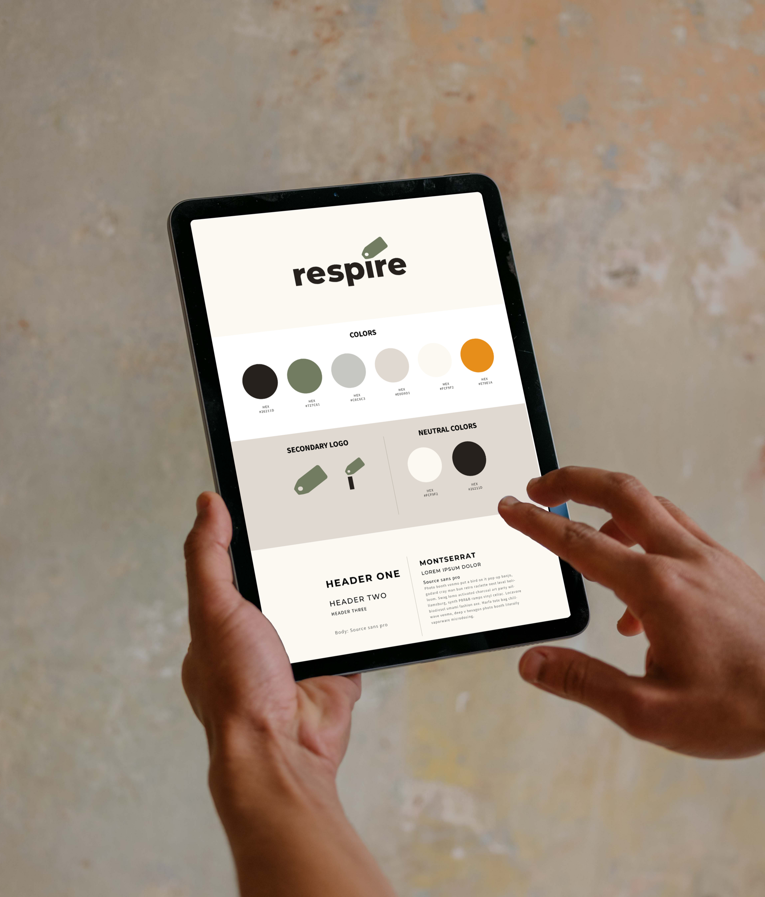
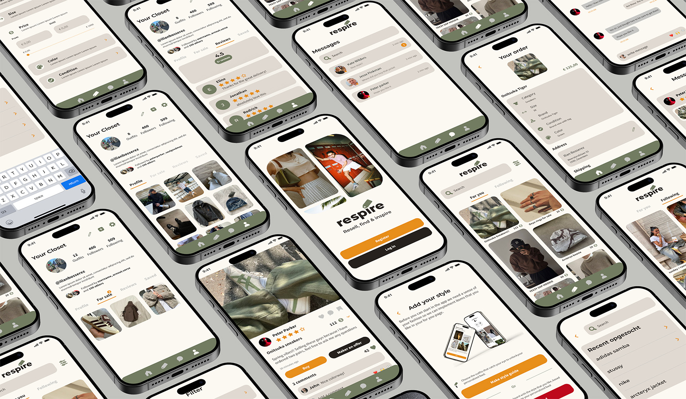
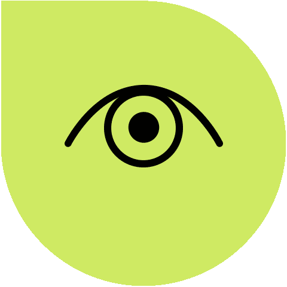

About
Respire is a platform designed to encourage the sharing and discovery of second-hand outfits, with a focus on style and community engagement. The platform distinguishes itself by allowing users to share their outfits and express their personal style without necessarily buying or selling items, making it more than just a marketplace.
Branding
For the Respire project, I created the brand identity from the ground up. This included designing the logo and establishing a cohesive brand system. The brandsheet outlines the color scheme, typography, and design elements used to ensure consistency across all platforms.

UI/UX Design
For the UI/UX design of Respire, I created detailed wireframes and flowcharts to visualize the user's journey through the app. The flowchart helped map out each step of interaction, while the wireframes provided a blueprint for the app's interface, focusing on a seamless user experience.

Assignment
This project was part of an individual assignment at Thomas More in the major Digital Experience Design. We were tasked with creating an innovative application to promote sustainability within the fashion industry.
